Bravado Endpoint Security System
Watches company computers and reports whether each one is available and secure, in real time.
- Security
- Endpoint monitoring

Problem
A company's computers (endpoints) have to be watched all the time. IT staff need to see quickly which ones are available and what their security status is.
Solution
A computer security monitoring system that monitors company endpoints and gives real-time information about their availability and security status.
Features
- Real-time availability of each endpoint
- Security status of each endpoint
Have an internship or project in mind?
I'm open to internship opportunities. Send me a message and I'll get back to you.